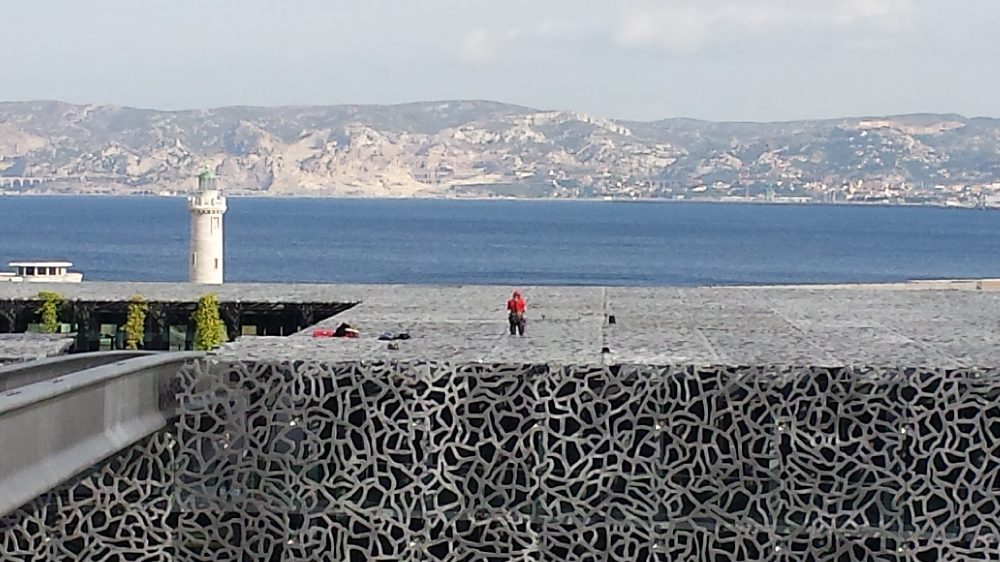

TOPOGRAPHIE DE PRECISION
TOPOMETRIE DE PRECISION
RELEVE SCANNER DE PRECISION
La topographie et la topométrie de précision sont deux domaines très spécifiques de la mesure et demandent une grande maitrise de la technique et des instruments qui y sont associés.
Nous pouvons vous accompagner dans vos chantiers et vous proposer des missions adaptées et étudiées sur mesure dès que le résultat à obtenir est inférieur à 5mm et se rapproche de 0.5mm.
Nous en avons fait notre spécialité.
Notre process est basé sur le principe d’une assistance tout au long de l’étude et du chantier et comprend:
• L’analyse de la faisabilité, du processus, des besoins, de la précision, des conditions et délais de réalisation.
• L’étude des moyens matériels et humains à mettre en œuvre.
• La conception des techniques et des outils adaptés.
• La proposition de variantes ou de technologies adaptées à vos besoins ou à la demande de la maitrise d’œuvre.
• L’analyse des plans, des servitudes, des règles d’urbanisme et surtout le mode de fonctionnement.
N’hésitez pas à nous consulter en amont pour tout type de chantier où la précision et la qualité de la mesure sont indispensables techniquement et économiquement.
Un relevé de précision, une implantation de précision réduisent considérablement les temps de conception, de réglage ou d’adaptation des éléments fabriqués avant.
A titre d’exemple, la topométrie et la topographie de précision sont nécessaires pour les chantiers type :
- Surveillance d’ouvrages d’arts.
- Surveillance de mouvements de structures et/ou de terrains.
- Comparaison de déformations de surfaces planes ou de modèles complexes.
- Modélisation 3D.
- Diagnostic d’ouvrages d’arts et de structures.
- Essais de chargement et de déformation.
- Chemin de roulement.
- Implantation de précision de murs rideaux, de structures métalliques, de génie civil, de rails, de chemins de roulement et bien d’autres domaines.
- Relevé de précision de génie civil existant.
- Réglage de machines.
- Fondations spéciales et profondes.
- Réglages de structures et de passerelles de longues portées.
- Et tout ce dont vous pouvez avoir besoin.
Nous utilisons une gamme de matériels de hautes précisions faisant l’objet d’un contrôle permanent et d’étalonnage régulier.
Les procédés de mesures sont adaptés pour éliminer toutes les erreurs systématiques et augmenter au mieux la précision.
• MULTISTATION LEICA MS 50 : classe de précision 1mm à 100m avec scanner 3D, Laser et caméra HD calibrée coaxiale.
• NIVEAU DE PRECISION DNA 03 : classe de précision 0.3mm à 30m avec mire invar code barre.
• SCANNER LEICA P40
• SCANNER FARO S150
• KIT POLYGONALE CENTRAGE FORCE
• CIBLES-REPERES-PRISMES DE PRECISION
Les Logiciels utilisés à titre indicatif sont :
• Covadis calcul
• Autocad Map 3D
• Leica Cyclone et Clouds Works
• Trimbel Réalworks
• 3D Reshaper
Ces matériels et ces logiciels ne seraient rien sans la très
haute technicité d’une équipe formée depuis plus de 25 ans à la
mesure et au traitement des données de précision, se mettant à
jour régulièrement et se remettant en question à chaque nouveau
chantier qui apporte inévitablement une nouvelle problématique.
L’expérience et les conditions d’intervention en sus d’une grande exigence de qualité et au contact de clients très exigeants nous ont également conduit à attacher un souci permanent à la sécurité et à l’environnement.
Notre profession est la première à avoir adapté l’agenda 21.
Si nous en sommes arrivés là, c’est essentiellement grâce à nos
clients qui sans cesse nous poussent dans nos retranchements.
Au risque d’en oublier certains, nous pouvons citer :
FREYSSINET - CONCRETE SIXENCE - FAYAT-CASTEL ET FROMAGET - EDF - ESCOTA – ASF - ESID TOULON – SOLETANCHE BACHY – APAVE
Ces clients nous ont fait participer à des chantiers prestigieux tels que :
• Les ouvrages d’arts des autoroutes ASF et ESCOTA.
• Les barrages du Mercantour, l’usine de Sisteron d’EdF.
• La forme de radoub accueillant le Porte-avions Charles de Gaule.
• Le Mucem.
• La Villa Méditerranée.
• Euromed Center.
• L’usine EdF de Sisteron.
Le Mucem:
